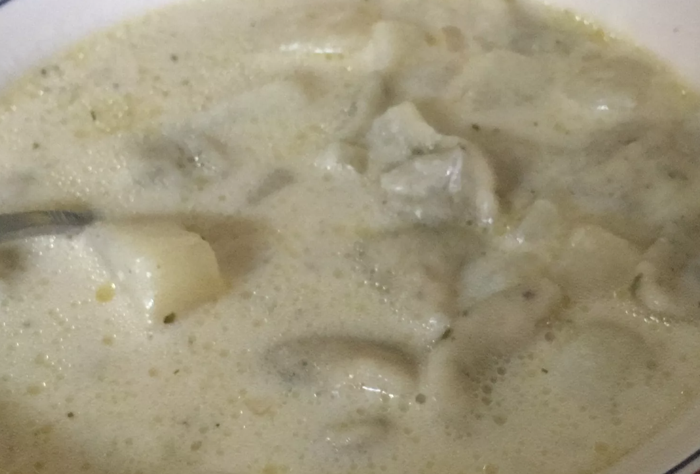

Potato Soup

Description
This is an easy recipe to make a classic potato soup.
Ingredients
- ½ cup butter, cut into cubes
- 3 baking potatoes, peeled and cut into cubes
- 1 small onion, diced
- ½ teaspoons ground black pepper
- 3 cups whole milk
- 6 cups water
- 2 tablespoons chicken bouillon
- Sautee onion in a pot for 5 minutes, add poptatoes and other ingredients and bring to a boil.
- Simmer all ingredients together for 20 minutes.